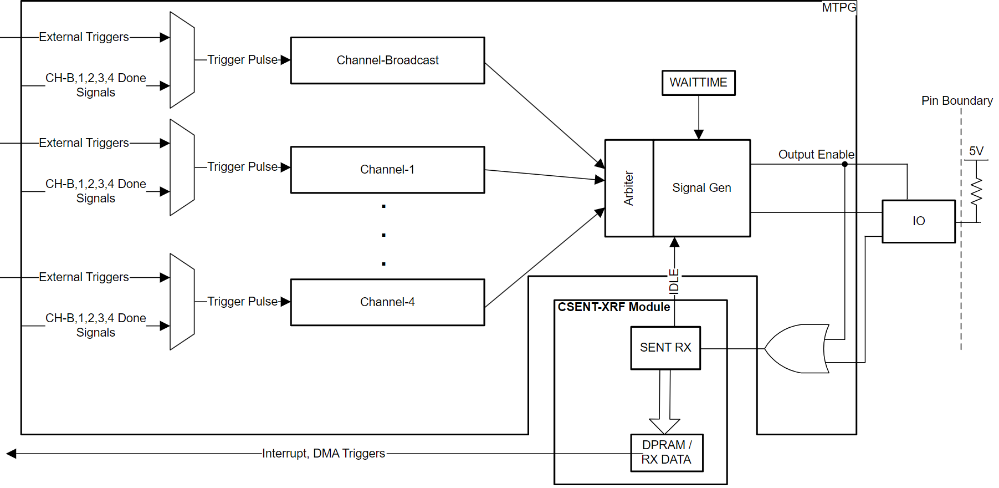
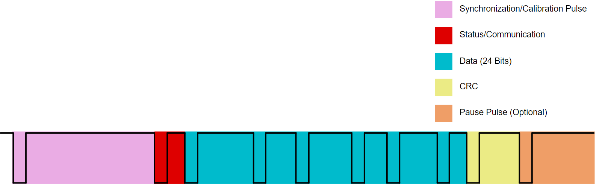
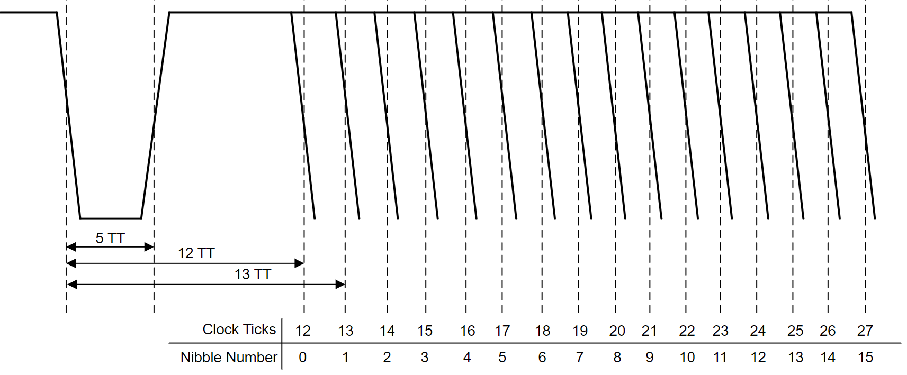
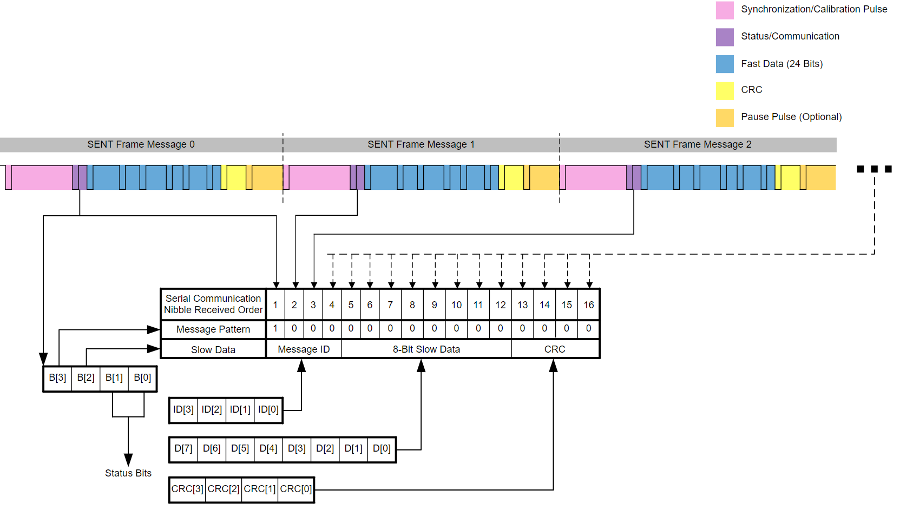
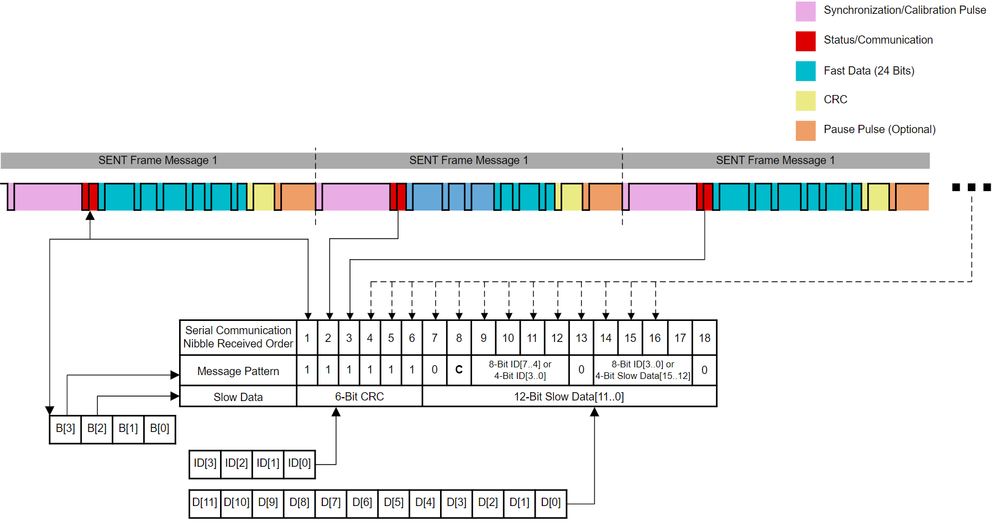

Single Edge Nibble Transmission (SENT)#
Overview#
In this module, you will:
Gain a basic understanding of the SENT protocol
Learn the fundamental formats and flow of SENT data
Understand the benefits and general applications of SENT
Introduction#
The Single Edge Nibble Transmission Extended Receiver Features module, or SENT for short, is a module that uses the SENT communication protocol (note that “nibble” refers to a 4 bits of data). This protocol is unidirectional and uses a single wire between two or more points to transmit signals from one or more sensors to a controller. The SENT peripheral on C29x devices uses the open standard SAE J2716 released by the Society of Automotive Engineers (SAE), and it is typically used in automotive applications to read data from sensors. The SENT peripheral on C29x devices also includes a unique module called a Master Trigger Pulse Generator (MTPG). This MTPG controls and receives data from one or more sensors using a configurable pulse signal. The received data can be stored directly into memory or directly into a FIFO and can be read by the CPU or DMA.


Figure 1: SENT Block Diagram#
Note
Not all C2000 devices have a SENT module. Refer to the Peripheral Reference Guide for a list of supported modules on your device.
Application of SENT#
The SENT protocol can transmit high resolution data at a low cost to the system, and it is typically used in automotive applications such as a powertrain where data needs to be reliably transmitted to a vehicle controller. Since SENT can transmit data on a single wire and can receive data constantly, it can thus be used in any application that requires reading data from a transmitter with a robust high-resolution data transmission.
What is SENT?#
SENT messages are encoded and decoded based on the time between falling or rising edges (depending on the idle polarity). For this section, the high idle polarity is used as an example. The same information applies for low idle polarity, with the edge direction of the clock being swapped. The messages are timed using clock tick time, or TT, which is calculated during the calibration pulse.
SENT protocol uses two main communication formats: fast frames and slow frames.
Fast Frames#
The fast frame format for SENT is seen in Figure 2:


Figure 2: Fast Frame Example#
Each SENT fast frame is comprised of 6 parts:
A calibration pulse with a fixed period
This is used by the receiver as a reference to measure the TT. The pulse starts with a falling edge for high idle polarity or with a rising edge for low idle polarity, and the counter for the synchronization period startscounting.
The TT is used to sample the nibbles’ values. If more than one synchronization pulse is detected, the first one is ignored under the assumption that the pulse is a pause pulse.
A status and serial communication nibble pulse:
The status nibble transmits miscellaneous information such as part numbers, mode of operation, and error code information in slow channel mode.
The status nibble for the FAST channel without a slow serial message is 0, with an option for using bit 0 and/or bit 1 as an error flag for certain sensors. If the sensor is in error, bit 0 or 1 of the status nibble isset to 1.
A Short or Enhanced Serial Message is ignored on the status and communication nibble until the appropriate pattern of the message is received. Note that if the status nibble is used in a way not defined by the J2716standard, then mask the serial errors appropriately


Figure 3: Nibble Pulse#
One to eight data nibble pulses
For high idle polarity, the pulse starts with a falling edge and remains low for a few clock ticks. Then each nibble’s value is determined between falling edges. The incoming serial nibble value is sampled at a clock tick length of TT / 2. The sampling occurs at the middle of the nibble pulse. For high idle polarity, the SENT TT counter counts the number of TT between two falling edges of the nibble pause and offsets the value with the minimum clock tick needed for each nibble pulse.
A CRC nibble pulse
An optional pause pulse
An end pulse for synchronous mode SENT (requires MTPG)
For sensors synchronously responding to the MTPG, an end pulse terminates the frame transmission after the CRC nibble and idly waits for the next trigger pulse. The SENT peripheral does not require a complete end pulse, and acknowledges the received packet when the CRC is verified.
Slow Frames#
A slow frame is composed of multiple fast frames, and transmits longer streams of data. The slow frame also utilizes multiple fast frames to transmit additional information through the status and communication nibble, such as the message ID, slow data, and CRC. Shown below are two types of slow frames. Figure 4 shows a basic slow frame format:


Figure 4: Short Serial Format#
Figure 5 shows the enhanced version of the slow frame format:


Figure 5: Enhanced Short Serial Format#
Master Trigger Pulse Generator (MTPG)#
The Master Trigger Pulse Generator (MTPG) generates pulses for synchronous mode sensors which will send data only after receiving a specific trigger pulse.
The MTPG triggers can be used to configure sensors or request data from synchronous mode sensors, since the MTPG can create desired pulse patterns that are recognized by the sensors. For sensors with synchronous transmit, the sensor sends data when the MTPG has sent a pulse that matches with the sensor’s pulse size requirement. The trigger can come from the done signal of an MTPG channel, a compare register, or external to the SENT peripheral.
Receive Modes#
The receive buffer for the SENT peripheral can be configured as a FIFO or a direct map. In FIFO mode, the FIFO supports a depth of 24 values. This mode allows the host to be slow without causing data loss. Each sensor can store up to two data per frame in addition to the time stamp. This allows 8 individual frames of data to be stored using FIFO mode. The FIFO level is an indication of the number of 32-bit words available in the buffer, where each frame consists of three 32-bit words (timestamp, data 0, and data 1). This FIFO level can be used to generate an interrupt if it meets or exceeds the user-configured threshold.
In direct mode, the data received is stored directly from SENT to memory, with designated locations for each SENT MTPG channel.
Interrupt Configuration#
The SENT peripheral has interrupts for receive errors and FIFO thresholds. An interrupt can be created based on the FIFO level of the SENT peripheral when the interrupt is enabled and the FIFO level is greater than or equal to the user-configured threshold. Some other types of errors include:
Fast CRC Error: The receiver CRC calculation does not match the CRC nibble received of the fast channel
Fast Frame Error: The received status or data nibble of the fast channel goes beyond the minimum or maximum TT listed for the protocol
Slow CRC Error: The received slow channel message ID and data CRC calculation does not match the received slow channel CRC
Slow Format Error: The received slow channel message contains an incorrect format than what is expected. In this case, the state machine for detecting the correct sequence for a slow frame restarts each time there is an error (this way the state machine gets properly synchronized again with the calibration pulse after enough restarts)
Calibration Errors: There are two types of calibration errors
Type 1: Receiver is programmed with initial tick-time clock cycle according to the TTCLK bits in the SENT configuration register, which is derived from the calibration pulse of a frame. If the newly determined calibration TT differs by more than a pre-determined amount from the initially programmed time, the interrupt flag is raised. The receiver assumes the newly derived TT going forward unless the TTCLK is re-programmed
Type 2: Synchronization pulse conversion with the previous frame differs by more than a pre-determined amount, then the interrupt flag is raised
Too many or few nibbles between calibration pulses: A fast frame error occurs when there are too few or too many nibbles between calibration pulses; a fast CRC error can also occur if there are too many nibbles and the CRC check is enabled. This occurs because the additional nibbles gets interpreted as a CRC
Frequency drift: If two successive frames vary in length by more than a pre-determined amount, the interrupt flag is raised. This is determined by a ratio of the calibration pulses to the message length. This interrupt must be masked unless you are confident there are fixed length frames, which can be created by including a pause pulse. This check is active if the pause pulse is expected and enabled For more information and SENT interrupts and how they are triggered, refer to your device’s documentation.
CRC Calculation#
The Cyclic Redundancy Check, or CRC, is a method of detecting errors in transmitted data. The CRC checksum is used only when the CRC is enabled. CRC4, CRC6, and CRC8 are used for the receiver to check against the received data. The corresponding CRC outputs a 4-bit, 6-bit, or 8-bit CRC respectively:
CRC4
The CRC4 value is used to verify the validity of data nibbles in the Fast Channel frame, the message ID, and the data in the slow channel short serial message. CRC4 uses polynomial G(x) = x^4 + x^3 + x^2 + 1 with a seed value of 0101. The status and communication nibble is included in this CRC calculation if the CRC status parameter or programmable bit is enabled. The checksum is implemented as a bit-wise XOR with a 16-element array lookup. The checksum is determined by using all data nibbles in sequence and check-summing the result with an extra zero value. A 4-bit zero nibble is added after the data nibbles to protect for common errors in the last data nibble and checksum.CRC6
The CRC6 value is used to verify the validity of the 24-bit slow channel enhanced serial message using the polynomial G(x) = x^6 + x^4 + x^3 + 1 with a seed value of 010101. CRC6 is also used to verify the 24-bit fast channel frame format data using a different polynomial, G(x) = x^6 + x + 1 with a seed value of 010101. The checksum is implemented using a bit-wise XOR with a 64-array lookup. The checksum is determined by reading in 6-bit groups of the 24-bit message data in order and check-summing the result with an extra zero value. The 6-bit zero nibble is added after the data nibbles to protect for common errors in the last data nibble and checksum.CRC8
The CRC8 value is used to verify the validity of the 28-bit fast channel frame format data, which contains 7 data nibbles and 2x2 Rolling counter data. This checksum uses the polynomial G(x) = x^8 + x^5 + x^3 + x^2 + x + 1 with a seed value of 01010101.
Test Your Knowledge!#
Question 1
What benefits make SENT useful for automotive applications?
Answer
SENT is useful for its low cost and high reliability.
Question 2
What is the MTPG?
Answer
The Master Trigger Pulse Generator is a pulse generator which can be used to request data from one or more sensors connected on a SENT bus.
Question 3
What is the difference between a fast frame and a slow frame?
Answer
A fast frame has the transmitted data in a single SENT frame whereas a slow frame is used to transmit longer streams of data using multiple fast frames.
Summary#
From this module, the key takeaways are:
SENT is a single-wire communication protocol
The SENT protocol can be used to read data from sensors for applications such as power steering
There are configurable triggers for the SENT peripheral provided on C2000 devices
Receive modes, interrupts, and CRC checksum types for SENT are configurable